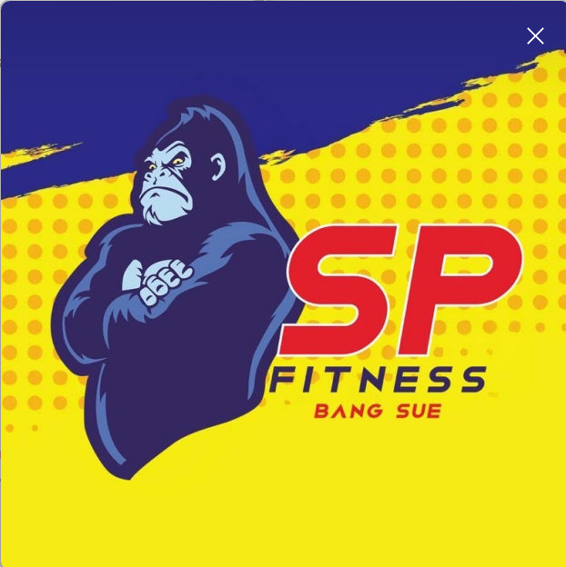

ระบบบันทึกสถิติบาสเก็ตบอล Courtside + CMS
| ส่วน | ใช้ทำอะไร |
|---|---|
| Courtside | บันทึกสถิติข้างสนาม ด้วยการคลิกแผนที่สนาม |
| CMS | ล็อกอิน จัดการ/ดูรายการเกม |
| ปุ่ม | ความหมาย |
|---|---|
| ซิงก์ | ส่งข้อมูลที่ค้างขึ้นเซิร์ฟเวอร์ |
| Ctrl+Z / เลิกทำ | ยกเลิกรายการล่าสุด |
| ส่งออก Excel | ได้ไฟล์รายงาน .xlsx |
| สำรองเกมนี้ | ดาวน์โหลดไฟล์สำรอง JSON |
| อาการ | วิธีแก้ |
|---|---|
| ซิงก์ไม่สำเร็จ | เช็กเน็ตแล้วกดซิงก์ใหม่ ข้อมูลในเครื่องยังอยู่ |
| ล็อกอินไม่ได้ | ตรวจอีเมล/รหัส หรือสมัครใหม่ |
| คลิกสนามแล้วยังไม่บันทึก | ต้องเลือกเข้า/ไม่เข้า และผู้เล่นให้ครบ |
เอกสารฉบับเต็ม (Markdown): ดูที่
docs/USER_MANUAL.md ในโปรเจกต์